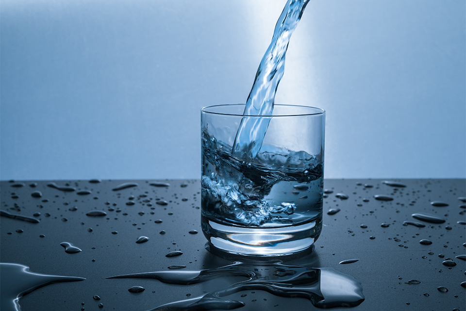

ROVNOVÁHA TEKUTÍN V TELE A VÝZNAM DOSTATOČNEJ HYDRATÁCIE

Voda je nevyhnutná pre život a dostatočná hydratácia je dôležitá pre fyzickú aj duševnú výkonnosť. Ľudské telo z veľkej časti tvorí voda. Jej podiel s vekom klesá z približne 75 % u dojčiat na 60 % u dospelých. Bez jedla síce môžeme prežiť až 50 dní, bez vody však vydržíme len niekoľko dní, a to aj v chladnom podnebí. Ľudia zvyčajne pijú dosť vody, no u niektorých skupín, napríklad u starších ľudí, alebo pri cvičení môže byť dostatočný príjem tekutín rozhodujúci.
DENNÉ STRATY VODY
Cez pokožku z tela neustále uniká voda, približne 700 ml denne. Ďalších 100 ml strácame stolicou, asi 1,5 litra močom a 200 ml bežným potením. Aj pri bežnom fungovaní a dýchaní v miernom podnebí teda potrebujeme približne 2,5 litra vody denne. Cvičenie a vyššie teploty zvyšujú potenie, straty vody a tým aj potrebu tekutín. Straty vody sa výrazne zvyšujú aj pri chorobe a hnačke.
ÚČINKY DEHYDRATÁCIE
Dehydratácia môže spôsobiť bolesti hlavy, únavu a zhoršenú sústredenosť. Tento problém sa spája najmä so starnutím. Starší ľudia sú menej náchylní na miernu dehydratáciu, pijú menej a doplnenie tekutín im trvá dlhšie. Duševná výkonnosť sa môže zhoršiť aj u mladších dospelých s miernou dehydratáciou. Deti pri ochladzovaní tela strácajú potením viac vody, preto treba dbať na to, aby v horúcom počasí dostatočne pili. Pite dostatok tekutín, aby ste nahradili stratenú vodu. Pri metabolických procesoch si telo vytvorí približne 250 ml vody a ďalších 750 ml prijmeme z jedla. Z nápojov tak potrebujeme prijať 1,5 litra. K celkovému príjmu tekutín môžu prispieť všetky nápoje na báze vody vrátane ovocných štiav, nealkoholických nápojov, čaju, kávy, slabších alkoholických nápojov, ako je pivo, aj samotnej čistej vody. Ukázalo sa, že pri zvýšenej potrebe tekutín záleží aj na tom, ako nám nápoje chutia. Štúdie tiež ukázali, že kofeín v množstve bežnom v šálke kávy, čaju alebo v kolovom nápoji nemá dehydratačný účinok. Odborníci sa preto zhodujú, že bežné kofeínové nápoje sa môžu započítať do celkového príjmu tekutín. Nápoje s obsahom alkoholu 10 % a viac, napríklad väčšina vín, však vedú k čistej strate tekutín.
ČO SA DEJE PRI ŠPORTOVANÍ V HORÚCOM PODNEBÍ?
Pri cvičení sa telo ochladzuje odparovaním potu z pokožky. Aby sme predišli dehydratácii, potrebujeme preto viac piť. V chladnom alebo miernom podnebí mladí ľudia často zvládnu stratu vody zodpovedajúcu 2 % telesnej hmotnosti bez zhoršenia fyzickej výkonnosti. V horúčave však takáto strata tekutín znižuje výkonnosť a môže viesť k zdravotným ťažkostiam z prehriatia. Strata viac ako 5 % telesnej hmotnosti môže znížiť schopnosť podávať výkon približne o 30 %. Viaceré štúdie ukázali, že dostatočná hydratácia pred vytrvalostným tréningom a počas neho pomáha zlepšiť výkon v rôznych podmienkach.
SOĽ PODPORUJE PRÍJEM VODY A POMÁHA ZADRŽIAVAŤ TEKUTINY POČAS ŠPORTU AJ PO ŇOM
Pridanie sodíka (soli) do nápojov podporuje vstrebávanie sacharidov, čím sa zlepšuje aj vstrebávanie vody. Doplnenie soli stratenej potením pomáha udržať objem krvi. Ak počas vytrvalostného tréningu v horúčave a po ňom pijete iba veľké množstvo čistej vody, telesné tekutiny sa môžu zriediť a telo môže vylúčiť veľa vody močom. Hydratácia sa tak neudrží a nízka hladina sodíka môže viesť ku kŕčom a vyčerpaniu z horúčavy. Podľa článku tomu možno predísť pitím nápojov s obsahom sodíka, napríklad športových nápojov s koncentráciou sodíka podobnou tej v telesných tekutinách, alebo pitím vody spolu s jedlom.
AKO SI UDRŽAŤ DOSTATOČNÚ HYDRATÁCIU
Vodu treba piť každý deň. Väčšina ľudí už počula odporúčanie vypiť denne 6 až 8 pohárov vody s objemom 8 tekutých uncí (približne 240 ml). Je to rozumný cieľ. Potreba vody sa však u každého líši. Väčšina zdravých ľudí si udrží dostatočnú hydratáciu, keď pije vodu a iné tekutiny podľa smädu. Niekomu stačí menej ako 8 pohárov denne, iný potrebuje viac. Ak máte obavy, že pijete málo vody, všímajte si farbu moču. Ak je väčšinou bezfarebný alebo svetložltý, pravdepodobne prijímate dosť tekutín. Tmavožltý alebo oranžový moč môže naznačovať dehydratáciu.
Voda je najlepšou voľbou na dopĺňanie tekutín. K hydratácii môžu prispieť aj iné nápoje a potraviny, niektoré však zvyšujú príjem kalórií z cukru. Ovocné a zeleninové šťavy, mlieko aj bylinkové čaje prispievajú k dennému príjmu vody. Započítať sa môžu aj kofeínové nápoje, napríklad káva, čaj a limonády. Mierne množstvo kofeínu (200 až 300 mg) väčšine ľudí neškodí. To je približne množstvo v 2 až 4 šálkach kávy s objemom 8 tekutých uncí (približne 240 ml). Kofeínové nápoje je však vhodné obmedziť. U niektorých ľudí môže kofeín vyvolať častejšie močenie, úzkosť alebo nervozitu.Voda je najlepšou voľbou na dopĺňanie tekutín. K hydratácii môžu prispieť aj iné nápoje a potraviny, niektoré však zvyšujú príjem kalórií z cukru. Ovocné a zeleninové šťavy, mlieko aj bylinkové čaje prispievajú k dennému príjmu vody. Započítať sa môžu aj kofeínové nápoje, napríklad káva, čaj a limonády. Mierne množstvo kofeínu (200 až 300 mg) väčšine ľudí neškodí. To je približne množstvo v 2 až 4 šálkach kávy s objemom 8 tekutých uncí (približne 240 ml). Kofeínové nápoje je však vhodné obmedziť. U niektorých ľudí môže kofeín vyvolať častejšie močenie, úzkosť alebo nervozitu.
Voda sa nachádza aj v ovocí a zelenine, napríklad vo vodnom melóne, paradajkách a šaláte, aj v polievkovom vývare.
Športové nápoje môžu byť užitočné, ak plánujete cvičiť intenzívnejšie ako zvyčajne dlhšie než hodinu. Obsahujú sacharidy a elektrolyty, ktoré vám môžu dodať energiu a pomôcť telu vstrebávať vodu. Niektoré športové nápoje však obsahujú veľa kalórií z pridaného cukru. Môžu obsahovať aj veľa sodíka (soli). Skontrolujte veľkosť porcie na etikete. Jedna fľaša zvyčajne obsahuje viac než jednu porciu. Niektoré športové nápoje obsahujú aj kofeín. Článok uvádza ako bezpečné denné množstvo 200 až 300 mg kofeínu.
Energetické nápoje sa od športových nápojov líšia. Zvyčajne obsahujú veľa kofeínu a ďalšie povzbudzujúce zložky, napríklad guaranu, ženšen alebo taurín. Telo tieto látky nepotrebuje. Väčšina týchto nápojov obsahuje aj veľa pridaného cukru. Podľa lekárov by deti a dospievajúci energetické nápoje nemali piť.
Ak sa vám nedarí prijímať dosť tekutín, môžu vám pomôcť tieto tipy:
- - Cez deň majte pri sebe fľašu vody. Vezmite si fľašu na opakované použitie a naplňte ju vodou z vodovodu, aby ste ušetrili.
- - Ak vám čistá voda nechutí, skúste do nej pridať plátok citróna alebo limetky. Pite vodu pred tréningom, počas neho aj po ňom. Napite sa aj vtedy, keď máte pocit hladu. Smäd si často mýlime s hladom. Skutočný hlad pitím vody nezaženiete. Pitie vody však môže byť súčasťou zdravého plánu na chudnutie. Niektoré výskumy naznačujú, že voda môže pomôcť navodiť pocit sýtosti.
- - Ak zabúdate piť vodu, stanovte si pravidelný režim. Napite sa napríklad po zobudení, pri raňajkách, obede a večeri a pred spaním. Alebo vypite malý pohár vody na začiatku každej hodiny.
- - V reštaurácii si dajte vodu. Pomôže vám doplniť tekutiny a je zadarmo.
Voda tvorí viac ako polovicu vašej telesnej hmotnosti. Každý deň ju strácate pri návšteve toalety, potením a dokonca aj dýchaním. V horúčave, pri fyzickej aktivite alebo horúčke strácate vodu ešte rýchlejšie. K rýchlej strate vody môže viesť aj vracanie a hnačka. Ak stratenú vodu nedoplníte, môže dôjsť k dehydratácii.